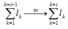

EXPRESS-G diagram
EXPRESS-G diagram| Courbe composite sur surface | |
| Zusammengesetzte Kurve auf einer Fläche |
The IfcCompositeCurveOnSurface is a collection of segments, based on p-curves. i.e. a curve which lies on the basis of a surface and is defined in the parameter space of that surface. The p-curve segment is a special type of a composite curve segment and shall only be used to bound a surface.
NOTE Definition according to ISO/CD 10303-42:1992
A composite curve on surface is a collection of segments which are curves on a surface. Each segment shall lie on the basis surface.There shall be at least positional continuity between adjacent segments. The parameterization of the composite curve is obtained from the accumulation of the parametric ranges of the segments. The first segment is parameterized from 0 to l1, and, for i ≥ 2, the ith segment is parameterized from

where lk is the parametric length (that is, the difference between maximum and minimum parameter values) of the kth curve segment.
Entity adapted from composite_curve_on_surface defined in ISO 10303-42.
HISTORY New entity in IFC4.
XSD Specification:
<xs:element name="IfcCompositeCurveOnSurface" type="ifc:IfcCompositeCurveOnSurface" substitutionGroup="ifc:IfcCompositeCurve" nillable="true"/>EXPRESS Specification:
| ENTITY IfcCompositeCurveOnSurface |
| SUPERTYPE OF(IfcBoundaryCurve) |
| SUBTYPE OF IfcCompositeCurve; |
| DERIVE |
|
| WHERE |
|
| END_ENTITY; |
Attribute Definitions:
| BasisSurface | : | The surface on which the composite curve is defined. |
Formal Propositions:
| SameSurface | : | The BasisSurface shall contain at least one surface (and exactly one surface). This ensures that all segments reference curves on the same surface. |
Inheritance Graph:
| ENTITY IfcCompositeCurveOnSurface |
| ENTITY IfcRepresentationItem |
| INVERSE |
|
| ENTITY IfcGeometricRepresentationItem |
| ENTITY IfcCurve |
| DERIVE |
|
| ENTITY IfcBoundedCurve |
| ENTITY IfcCompositeCurve |
|
| DERIVE |
|
| ENTITY IfcCompositeCurveOnSurface |
| DERIVE |
|
| END_ENTITY; |
 Link to this page
Link to this page